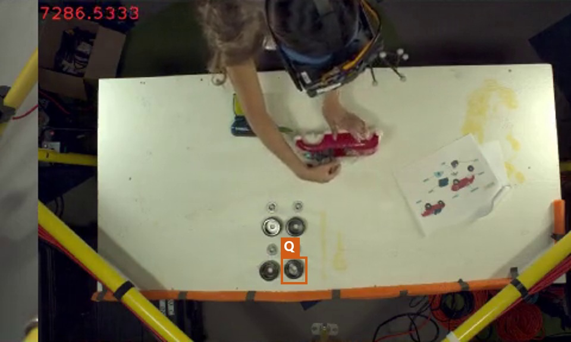
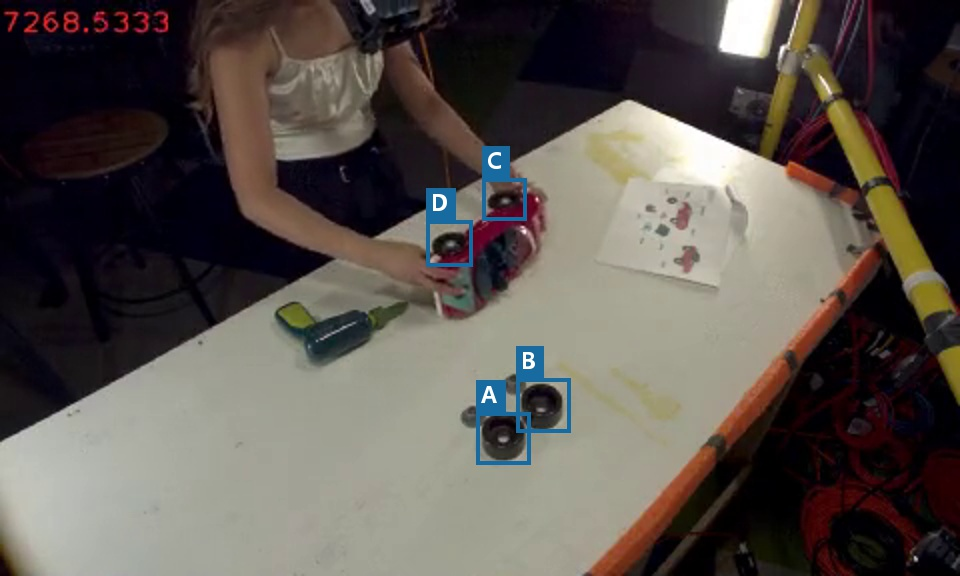
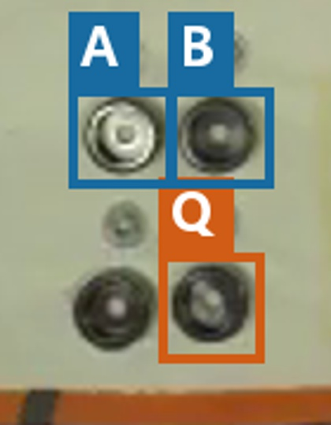
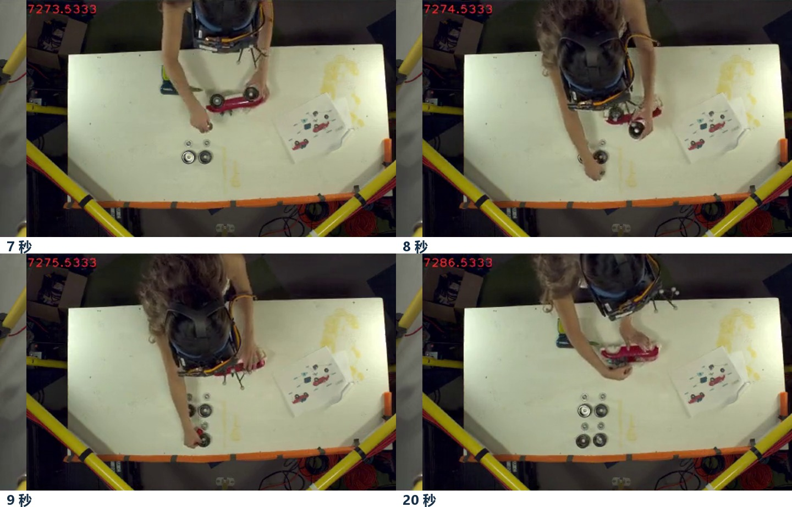

这只轮子，原来是哪一只？
给一张现在的照片，回看视频查来历；拿出依据，分不清就保留候选。
Q 原来是 A、B、C、D 中的哪一只？


为什么难：四只轮子很像。认错一只，就会把它的来历也认错。
要交回：来源是哪只＋哪段视频能证明；看不清时，保留候选。
真实拆车视频：同一次操作、两个同步相机。Q 是待查轮子的称呼，不是第五只轮子。
实际结果：排除两只，仍没找到唯一答案

这一步依赖对应正确、没有轮子交换。
排除错误 ≠ 证明正确。撤回“Q=A”，也要撤回它支持的来历判断；C、D 还得继续核对。
已运行外观匹配、位置检查与结论更新；尚未自动验证完整移动过程。图案检查也可能漏掉交换。
是否值得继续？先验证一个具体问题
证据变化时，系统能不能合理改变判断？
过程看得清
找对来源指出能证明的片段关键过程看不见
保留候选不强行猜一个关键片段补回来
更新判断同步修正受影响的结论已有相近工作：GEB 追踪同一物体的经历；REVEAL 检查证据、继续检索。不能把当前想法称为“没人做过”。
下一步：复用更多独立拆装视频，标出物体对应和关键片段，在相同可看证据范围内对照强方法。
看四项：来源找对没 · 依据支持没 · 缺证据时乱猜没 · 看了多少帧。
投入判断：若强方法仍稳定失败，再考虑建设基准；当前先做小规模验证。
本例是 1 次录制、4 个候选的原型。上述三种证据条件尚未完成对照实验。
备查：实验数字、另一视角与论文日期
本例结果：CLIP 外观排序 A 0.940 ＞ B 0.930 ＞ D 0.867 ＞ C 0.802；分数不是身份概率。位置检查共 37 次，A 匹配 30 次、B 匹配 36 次。排除 A、B 后，外观仍选 D；初步参考为 C，尚待独立人工复核。最终已验证身份为空，保留 C、D。
范围：Assembly101 官网 25 秒演示的两个同步视角；给定物体框及初始对应。全程 CPU、无训练。位置检查是图案匹配，不能保证身份连续；阈值变化会影响结果。4 项依赖更新检查通过，不等于身份识别已验证，也不代表已实现自主取证。
回溯示例：撤去“Q=A”及其对“Q 原来在桌面”的支持；保留独立事实“A 在 2 秒画面中位于桌面”。
另一视角与过程图片

原始视频回看，不是自动跟踪结果；遮挡处仍需复核。
| 论文 | arXiv 首版提交 | 版本区分 |
|---|---|---|
| DeepImageSearch | 2026 年 2 月 11 日 | 2 月文章；5 月 29 日更新 v2 |
| VHop | 2026 年 9 月 30 日 | 9 月文章；10 月 1 日更新 v2 |
以上按 arXiv 首版提交日期（UTC）计。DeepImageSearch 仓库于 2 月 12 日宣布发布、5 月 1 日宣布 ICML 2026 接收；接收时间与首版时间不同。官方仓库。
思路来源：DeepImageSearch 提示从视觉历史找线索；VHop 将多步视觉检索交给检索工具。这里的验证尚未实现或训练 VHop-Router。